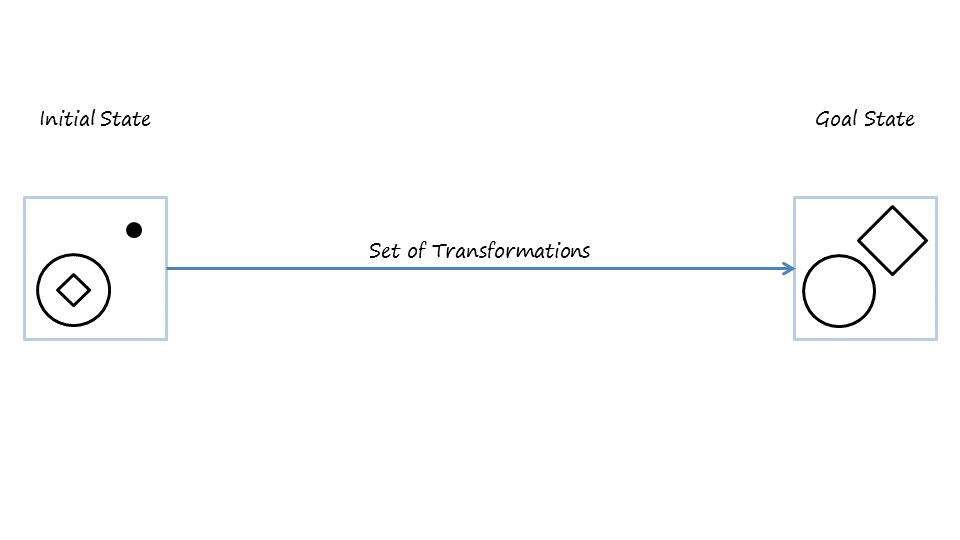
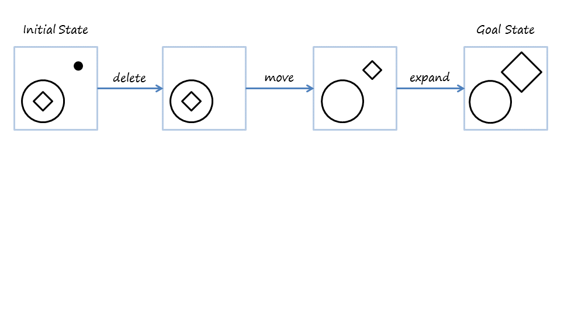
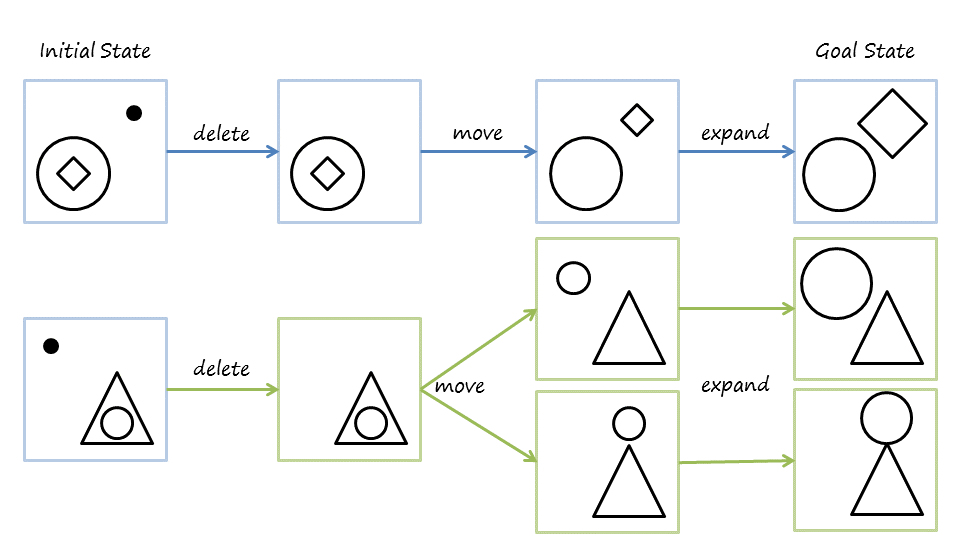
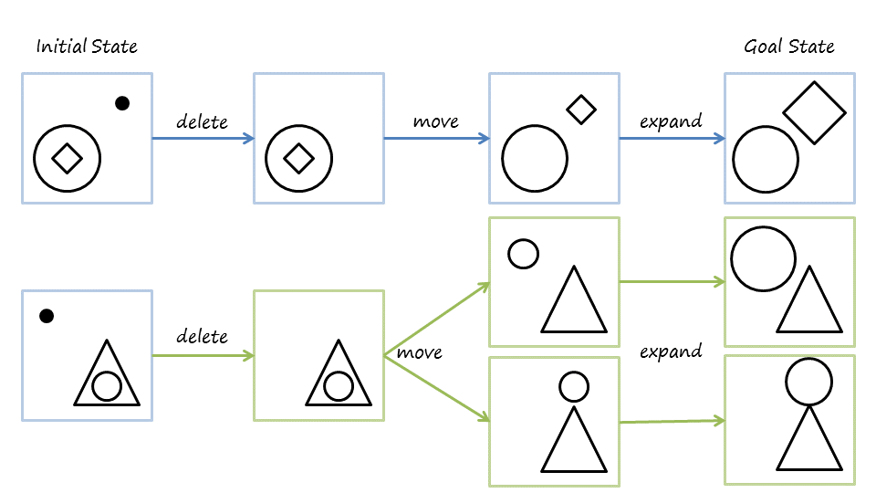
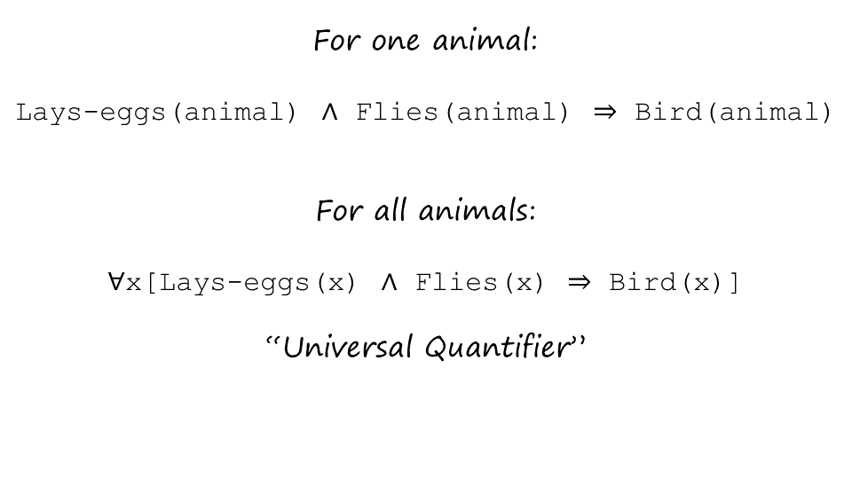
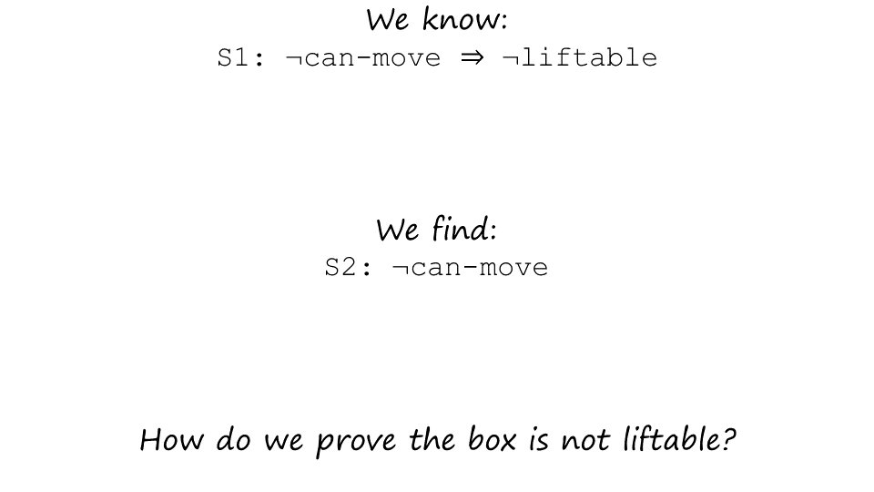
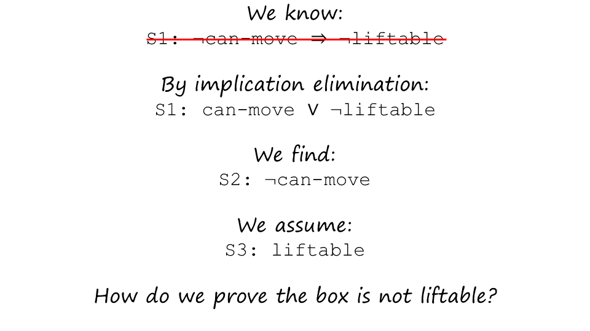
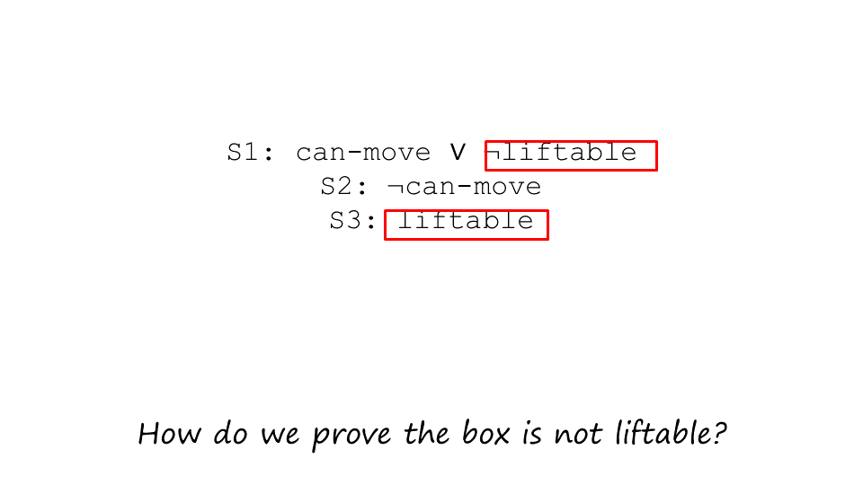
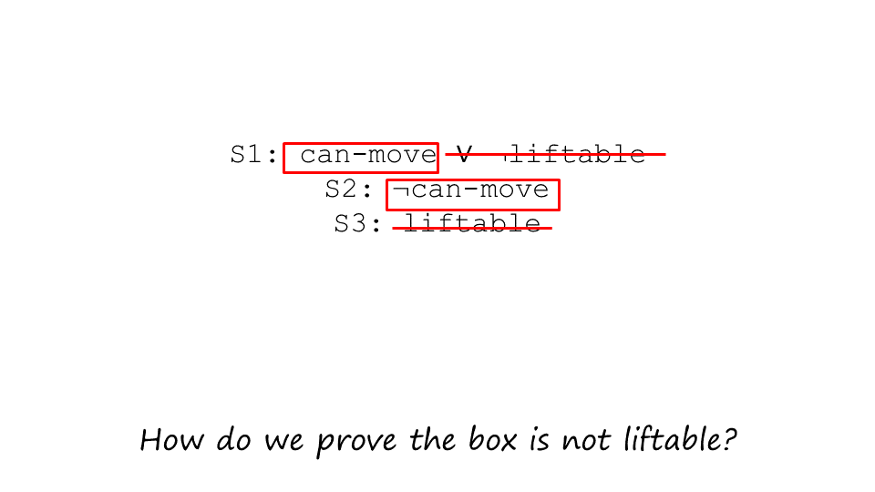
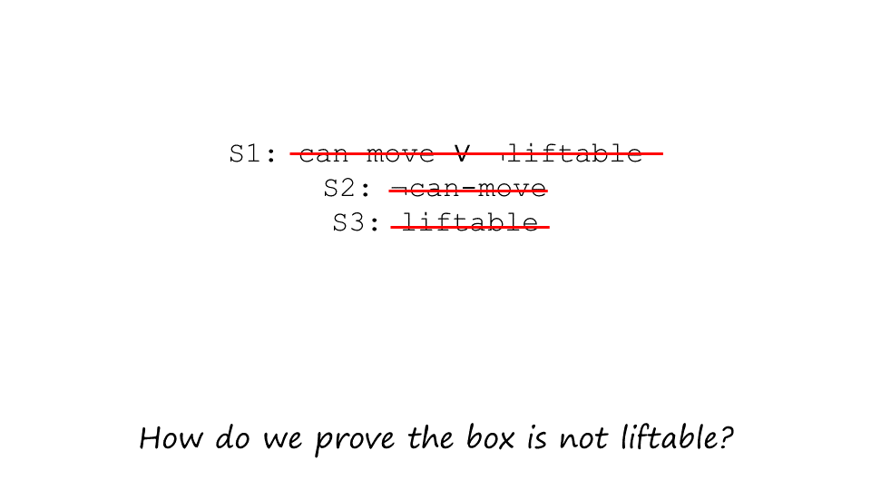

Section 26: Implication Elimination¶

As we go ahead and start applying rules of inferences to sentences in a knowledge base. We’ll find it convenient to rewrite the sentences in a knowledge base. And sometimes it will be very useful to rewrite these sentences in the knowledge base in a manner that eliminates the implications in a sentence. And this is how we can eliminate the implication. If a implies b, than we can rewrite it as not a or b. We know this because the truth value of a implies b is exactly the same as your truth value of not a or b. We can take an example here. Supposing that we are given feathers imply bird. Then we can rewrite this as not feathers or bird. And intuitively, you can see the truth value of this. It is either the animal does not have feathers or, it is a bird. In a little bit, we will see that this is a important rewrite rule in doing certain kinds of logical proofs.
Section 27: Rules of Inference¶

Okay, now that we have looked at how to write sentences in the language of logic and also looked at how to rewrite the sentences, for example by eliminating implication, let us now look at what kinds of rules of inference can be implied and how can we apply them. One rule of inference is called Modus Ponens, and many of you may already be familiar with it. If I’m given a sentence s1 which says p implies q, and another sentence S2 which says p, then I could infer q from it. p implies q and p, therefore q, this symbol stands for therefore. Let’s take an example, so imagine that I’m given that feathers imply bird. And I’m also given that feathers is true. Then, I can infer that bird must be true. Now we can connect this to a logic agent. Imagine that there is a robot and I bootstrap that robot with the knowledge that feathers imply bird. Now the robot goes to a new region in the country and finds some animal which has feathers. The robot cannot conclude that that particular animal is a bird. So the first sentence came from something that I had bootstrapped into the knowledge of the robot. The second sentence came from the percepts of the robot. And the third sentence came from its logical inferencing. And this is how the robot can, in fact, go about making sound, complete inferences that are guaranteed to be correct. Here is a second rule of inference, this is called Modus Tollens. So again I have sentence S1, p implies q, and I have a second sentence, not q. And therefore, I can inference that not p. So let us take an example of Modus Tollens. Imagine that there is a robot that has been programmed, bootstrapped with the knowledge feathers imply bird. So that’s part of its knowledge base already. This robot goes to a new country and is talking to the people in that country, and the people tell the robot a story about an animal that is not a bird. Therefore the robot may infer that that animal must not have feathers. So this is coming from the knowledge that is bootstrapped. This is coming from the new percept from the story. And this is coming from the logical inference. And once again, the logical inference is guaranteed to be sound and complete. You may already be familiar with this line of reasoning because this is another way of phrasing a contrapositive, that we see in other areas of logic.
Section 28: Prove Harry is a bird¶
 {kind=link}
{kind=link}
 

{kind=link}
Now you can see how we apply these rules of inferences on sentences in a knowledge base or philosophical agent to prove all kinds of sentences. See, imagine that an AI agent begins with the knowledge that if an animal has feathers, it implies that the animal is a bird. Now it comes across Harry, who does have feathers. By Modus Ponens, therefore the AI agent can conclude that Harry is a bird. This completes the proof for our original goal of proving that Harry is a bird. Now let us suppose that a goal is to prove that Buzz does not have feathers. Once again, imagine an AI agent which begins with the knowledge that if an animal has feathers, it implies that the animal has, is a bird. The agent comes across a animal, which is not a bird. Then by Modus Tollens it can infer that buzz must not have feathers. This completes the proof for of a original goal of proving that buzz does not have feathers. Okay. So now, we have looked at two ways of proving the truth value of various sentences. The first way was just through truth tables. I could have sentences and logic. Then I could write another sentence. And ask myself, what, what is the truth value of this sentence? I could construct a truth table for that sentence, composed of the truth values of all the predicates, with some of which might be coming from earlier sentences. The second way in which we have seen how we can prove the truth values of sentences and logic is by applying these rules of inferences like modus ponens and modus tollens. This is very powerful, and in fact the power of this logic has been known since before the birth of AI. As computer scientists however, we’ll analyze this power in a slightly different way. Yes, we can use method of truth tables to construct a truth table for any arbitrary sentence. However, the sentence was complicated. Then the truth table very soon will become very complex. Computationally, that is infeasible for very long, large sentences. Similarly, yes we can apply simply modus ponens and modus tollens to find the truth value of many sentences. But if the knowledge base consisted of a very large number of sentences, instead of just one or two sentences, then the kinds of inferences, number of inferences I can draw from those sentences simply by applying modus ponens and modus tollens, will be very large. Or if I had to find the truth value of a single sentence, then the different pathways I could take in order to get to the truth value of those sentences can make for long, large problem space. So while these methods of proving the truth with your sentences and logic have been around for a long time. These methods are not computationally feasible. At least not for complex tasks. At least not for agents that have only limited computational resources and from who we want near realtime performance.
Section 29: Universal Quantifiers¶
{kind=link}

Before we show you, a computationally more feasible way of proving theorems in logic, or proving the truth value of sentence in logic. We should point out that so far, we have been using only propositional logic. Propositional logic is sometimes also called the zero-if order logic. The key aspect of propulsion logic, is that it does not have any variables. So as an example, I may have a sentence that says if the animal Lays-eggs, and the animal Flies, then the animal is a Bird. And here I’m talking about a specific animal. Well, sometimes I might want to talk about, animals in general, any animal, all animals. In that case, I would want to introduce a variables in it. So in first audilogic, otherwise known as predicate calculus, I might want to say something like. If x Lays-eggs and x Flies, then x is a Bird. Which has a set form very similar to form here, except that instead of animal, I now have a variable. Now, I have a variable here. But, I must also specify the range of the variable. And what I really want to say here is for all animals. Therefore I’ll introduce a new quantifier over the variable x. This quantifier is called Universal Quantifier. It is denoted with the symbol, this is the symbol for Universal Quantifier. And this says now for all x, if x Lays-eggs, and x Flies it implies that x is a Bird. One thing to note here is that, I could have rewritten this sentence, with the Universal Quantifier back into proposition logic. But, having lots of sentences like this. In proposition logic. So I could’ve said Lays-eggs (animal) one, Flies (animal) one implies Bird (animal) one, Lays-eggs (animal) two, and Flies (animal) two implies Bird (animal) two. And so on and so forth, for each and every animal that is possible. But, by writing it in the form of a variable, a Universal Quantifier statement, I can reduce the number of sentences I have to write into just one sentence. So we have introduced variables, and we have talked at least about one quantifier so far, the Universal Quantifier, that applies for all values that that variable can take. Sometimes I might want to specify a different range of the variable. Not all values of the variable can take, but, at least some values of the variable I can take. So consider again, this sentence, here the animal is [referring] a specific animal. Now let’s look at the second sentence on this screen. And this sentence is the variable y. It says if y Layseggs and y Flies then it implies that y is a Bird. This sentence is a very similar form, to the previous except for the variable y. I can specify the value, that the variable y can take. This time I want to specify not that this sentence is true for all values of y, for all animals, but simply that it is true for. Some at least one animal in which case I’ll use an Existential Quantifier. Here is the symbol for an Existential Quantifier, this Existential Quantifier says that there is at least one animal, for which this sentence happens to be true.
Section 30: A Simple Proof¶
    {kind=link}
{kind=link}
{kind=link}
{kind=link}
{kind=link}
{kind=link}
Okay, let us set aside predicate calculus, and return back to population logic. Recall that we had found ways of writing sentences in population chronologic. We had found rules of inferences, we could prove theorems. We could find the truth value of new sentences. However, we found that those methods were computationally, not very efficient. So AI has developed more efficient methods. One of those methods is called Resolution Theorem Proving. Let us take an example to illustrate how resolution theorem proving works. So, imagine there is a robot, and this robot. Is working on an assembly line, it’s a factory robot, and on the assembly line are coming weird kind of widgets. The robot’s task is to pick up each widget, as it comes on the assembly line and put it in a truck. However, there are some humans in this factory. Who play a joke on the robot once in a while, they glued the widget to the assembly line belt, so that, when the robot tries to move it, it can not move it. But the robot is a smart robot, this is a logical agent, so when it can not move it. It uses its logical reasoning, to figure out that the boxes aren’t liftable. And the moment it knows that the boxes aren’t liftable, it lets go of the box and moves onto the next one.
Everyone got the story? All right. So let us suppose that the robot begins with some knowledge in its knowledge base. And this knowledge in its knowledge base, that it begins with says that if cannot move, then it implies that not liftable. Now, it tries to move the box, the next box in the widget. It’s biceps tells it, it can not move. It needs to prove that it’s not liftable. And of course this is a preview example and I’m sure you’ll understand it. You can put essentially a class of the modest components to prove that it’s not liftable. If p then q, p therefore you can infer q. But, we’ll use this example to show. How does resolution theorem proving works? So, the first step in resolution theorem proving is, to convert every sentence into a conjunctive normal form. A conjunctive normal form of a sentence, can have one of three conditions. It can have a literal. That can be either a positive atom, or a negative atom. It can have this disjunctional literals like here can-move, or not liftable, or it can have a conjunction of disjunctional request. In this example the third condition doesn’t occur. So, the first thing we must do is to take the first sentence. The negation of not move implies not liftable. And remove the implication, because an implication cannot occur in conjunctive normal form. So the first thing we need to do is, to rewrite the sentence, the first sentence, to remove the implication. Because the implication cannot occur in a conjunctive normal form. So now we use the. Implication elimination rewrite rule. To rewrite this in the form of can-move, or not liftable. Remember that was alpha implies beta becomes, not alpha or beta. So the not of negation of can-move becomes can-move or not liftable. So, we have done it for the first sentence. This is now in a conjuncted normal form. We can do the same thing for the second sentence, but wait, the second sentence already is in a conjunctive form. We don’t have to do anything. Now, the robot wants to prove that their box is not liftable. Resolution to improving, is like proof by refutation. To do proof by refutation we will take the negation of what we want to prove. We wanted to prove not liftable would take its negation, which makes it liftable. Okay, so now we got three sentences. This one’s the first sentence that the robot was bootstrap with, you’ve just converted to a conductor normal form. This was the sentence that came from a it saw that the box cannot move. And this is the sentence throughout the negation of the sentence, the refutation of the sentence that it wants to prove. So we have three sentences now. The first sentence came from the bootstrapping, of the robot’s knowledge base. This is the axiom that the robot assumes to be true. The second sentence came from its percepts. The robot tried to move the box, it could not move it. The third sentence is coming from taking the negation of what the robot wants to prove. It wants to prove it’s not liftable. So, it’s going to take this negation of it and then, sure that it’s going to lead to a null condition that we’ll view as a contradiction. The resolution for improving lawless begin with a liftable in the sentence that we want to prove. So here that sentence is liftable, and we’ll look for a sentence that contains a negation of liftable in this sentence that we want to prove. So the sentence here was liftable, sentence S1 contains liftable which is a negation of that so we pick S1 and not S2. Note, how efficient it was to decide what sentence on the knowledge based to go to. In sentence container negation of the liftable. So, liftable and not liftable can not both be true. We know that, and therefore we can eliminate them. This is called resolution. We resolve unliftable and we remove them from the sentences. Now, we were sentence as S1, that leaves us can move. So, now we pick a sentence, that has the negation of literal can-move. Sentence S2 has a negation of that, and we can resolve one can move, they can not both be true. When we resolve on both of them, those get eliminated as well. And now we see we’ve reached another condition. This null condition represents a contradiction, and now we can infer that liftable cannot be true, therefore not liftable is true. The robot has proved not liftable. And in this case it appears as a resolution theorem improving is more complex there’s more respondents. In general it is not. It just appears here, because this condition happened to fulfil the form of more respondents directly. In general, deciding on which sentence to apply the modest ponents on, and how to combine those groups of inferences don’t suddenly become [turns out to be computationally] harder than deciding how to apply the resolution and improvements.